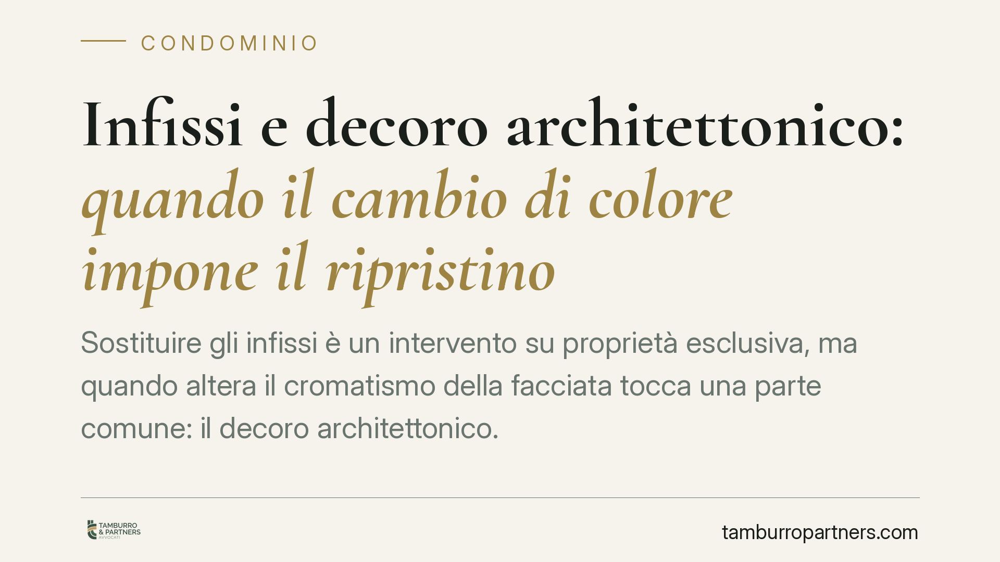

Infissi e decoro architettonico: quando il cambio di colore impone il ripristino
Sostituire gli infissi è un intervento su proprietà esclusiva, ma quando altera il cromatismo della facciata tocca una parte comune: il decoro architettonico. La giurisprudenza è netta: la modifica che spezza l'armonia estetica dell'edificio può comportare il ripristino coatto, e il degrado preesistente non vale come giustificazione. Vediamo i confini della regola e le mosse corrette per condomini e amministratori.

Il caso e il principio
Un condomino sostituisce gli infissi del proprio appartamento scegliendo un colore diverso da quello degli altri serramenti dell'edificio. L'intervento riguarda beni di sua esclusiva proprietà, ma il risultato visivo incide sull'aspetto complessivo della facciata, cioè su un bene comune.
Questa è esattamente la frizione che la giurisprudenza affronta da tempo in tema di decoro architettonico. Il principio consolidato è chiaro: l'autonomia del singolo sulla propria unità immobiliare incontra un limite quando le modifiche si riflettono, in modo apprezzabile, sull'estetica unitaria dell'edificio.
Quando gli estremi di una pronuncia specifica non sono ancora verificabili in via ufficiale, è prudente ancorarsi all'orientamento della Corte di Cassazione, che ha ripetutamente affermato la tutelabilità del decoro architettonico anche a fronte di interventi su proprietà esclusiva.
Inquadramento normativo
Il riferimento centrale è l'art. 1122 c.c., che disciplina le opere realizzate dal singolo condomino sulle parti di sua proprietà o uso esclusivo: sono vietate quando arrecano danno alle parti comuni o ne pregiudicano la stabilità, la sicurezza o il decoro architettonico. La sostituzione degli infissi con alterazione cromatica della facciata rientra tipicamente in questa fattispecie.
Distinta è l'ipotesi dell'art. 1120 c.c., che riguarda le innovazioni deliberate dall'assemblea sulle parti comuni: anche qui il decoro architettonico opera come limite, ma il piano è diverso perché la decisione è collettiva, non unilaterale. È importante tenere separati i due scenari: nel primo è il singolo ad agire di propria iniziativa; nel secondo è l'assemblea che delibera.
La nozione di decoro architettonico non è definita dalla legge. La giurisprudenza la individua nell'armonia estetica dell'edificio, valutata secondo il criterio dell'osservatore medio: non occorre un pregio artistico particolare, basta un assetto estetico riconoscibile che la modifica altera in modo percepibile.
Perché il degrado preesistente non salva
Un argomento ricorrente è che l'edificio versi già in condizioni di trascuratezza o presenti difformità pregresse. L'obiezione, di regola, non regge.
Lo stato di degrado non legittima l'introduzione di nuove difformità. Ciò che rileva è se l'intervento incrementi la disomogeneità estetica rispetto alla situazione preesistente: anche un edificio non impeccabile conserva un proprio equilibrio visivo, che una modifica cromatica può ulteriormente compromettere.
L'accertamento è affidato di norma a una consulenza tecnica d'ufficio (CTU), che verifica se e in che misura la nuova soluzione si distacchi dal contesto e aumenti la frattura estetica della facciata.
Ripristino e prescrizione: una precisazione
L'azione volta a ottenere il ripristino dello stato dei luoghi a tutela del decoro ha natura reale: è diretta a eliminare la lesione del bene comune e, come tale, non è soggetta a prescrizione. Finché la difformità permane, la pretesa al ripristino resta esercitabile.
Discorso diverso per l'eventuale pretesa risarcitoria connessa al danno subito: questa ha natura di diritto di credito e resta soggetta ai termini ordinari di prescrizione. È una distinzione da tenere presente, perché incide sulle strategie processuali e sui tempi.
Implicazioni pratiche
Per il condomino, l'intervento sugli infissi non è mai del tutto "privato": l'impatto sulla facciata lo porta nell'ambito dell'art. 1122 c.c. Scegliere un colore o un materiale difforme può esporre al rischio concreto di dover smontare e ripristinare a proprie spese.
Per l'amministratore e per il condominio, la tutela del decoro è un dovere di vigilanza. Tollerare difformità rende più difficile, in futuro, pretendere l'uniformità da altri condomini.
Cosa fare in concreto
- Verifica il regolamento condominiale prima di qualsiasi intervento: spesso contiene prescrizioni espresse su colori, materiali e tipologie di infissi.
- Documenta lo stato esistente con fotografie, così da avere un termine di confronto in caso di contestazione.
- Proponi la soluzione conforme al modello prevalente in facciata; se intendi discostarti, sottoponi la questione all'assemblea e acquisisci un consenso formale.
- Non invocare il degrado come giustificazione: non legittima nuove difformità e indebolisce la tua posizione.
- Agisci tempestivamente se sei il condominio: il ripristino resta esigibile, ma l'eventuale risarcimento è soggetto a prescrizione.
---
Contributo informativo a cura di Tamburro & Partners Avvocati - Avv. Giuseppe Tamburro. Non costituisce parere legale.
Ogni condominio ha una storia a sé.
Se gestisci un'amministrazione e vuoi un confronto su una specifica questione condominiale, scrivi allo studio. Ti rispondiamo entro un giorno lavorativo.